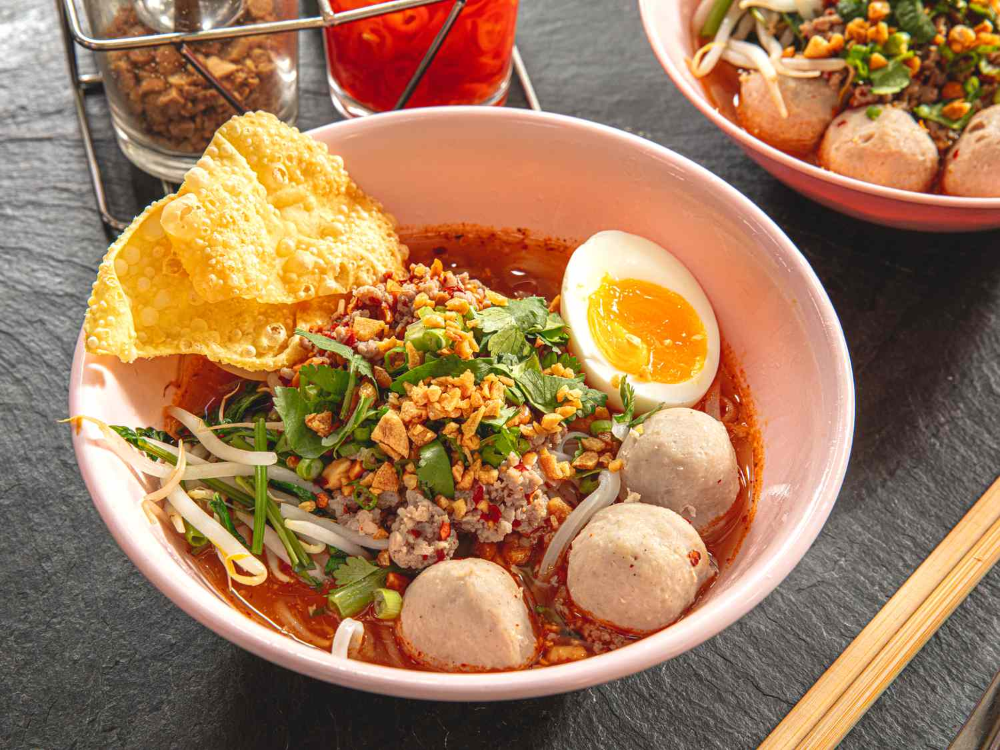

Ultimate Tom Yum Noodle Soup
Return to Main Page

Description
Our Ultimate Tom Yum Noodle Soup is a tangy and spicy Thai dish packed with
bold flavors. Combining tender rice noodles with shrimp, mushrooms, and a
fragrant broth made from lemongrass, kaffir lime leaves, and galangal,
this soup is finished with a splash of lime juice and fresh herbs.
Perfect for a comforting yet exciting meal.
Ingredients
- 7 oz rice noodles
- 8 oz shrimp, peeled and deveined
- 4 cups chicken or vegetable broth
- 1 stalk lemongrass, cut into 2-inch pieces and bruised
- 3-4 kaffir lime leaves, torn into pieces
- 3 slices galangal or ginger
- 1-2 Thai chilies, sliced (optional, for extra spice)
- 1 cup mushrooms, sliced
- 2 tablespoons fish sauce
- 2 tablespoons lime juice
- 1 teaspoon sugar
- 1/4 cup evaporated milk or coconut milk (optional, for creaminess)
- Fresh cilantro, chopped (for garnish)
- Fresh lime wedges (for garnish)
Instructions
-
Prepare the Broth:
- In a large pot, bring the chicken or vegetable broth to a boil.
- Add the lemongrass, kaffir lime leaves, galangal, and Thai chilies. Simmer for 10 minutes to infuse the flavors.
-
Cook the Noodles:
- In a separate pot, cook the rice noodles according to package instructions. Drain and set aside.
-
Add the Shrimp and Mushrooms:
- Remove the lemongrass, lime leaves, and galangal slices from the broth.
- Add the shrimp and mushrooms to the broth. Cook until the shrimp are pink and fully cooked, about 3-4 minutes.
-
Season the Soup:
- Stir in the fish sauce, lime juice, and sugar. Adjust to taste.
- If you prefer a creamy broth, add the evaporated milk or coconut milk at this stage.
-
Assemble and Serve:
- Divide the cooked noodles into bowls. Ladle the Tom Yum broth with shrimp and mushrooms over the noodles.
- Garnish with fresh cilantro and serve with lime wedges on the side.